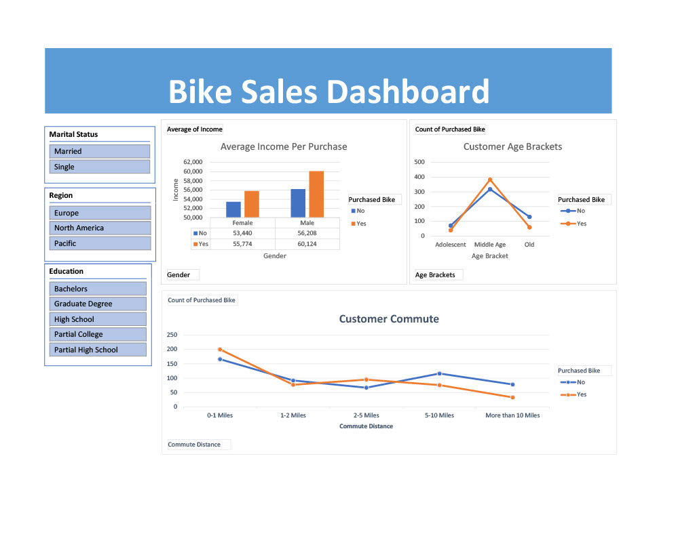

This is a project for cleaning and showing information about layoffs within different industries.
This project shows multiple different aspects about the data provided including percentage laid off, how many employees were laid off, which industries laid off the most employees, and much more vital information.
Exploring this data shows multiple different skills needed in SQL to extract important information and show the data in a way that is easy to understand.


In this project, I scraped data from a Wikipedia page listing the largest companies in the United States by revenue. Using the Pandas library in Python, I extracted the relevant information from the first table on the page and structured it into a DataFrame.
By inspecting the HTML code, I identified the key elements necessary to correctly organize the data. After cleaning and formatting the dataset for readability, I exported the DataFrame to a CSV file and saved it to my desktop.

In this project, I analyzed data from a bike shop to determine the characteristics of individuals making purchases.
The data set includes information such as whether a bike was purchased, yearly income, marital status, education level, region,
and other relevent details of customers who visited the shop. This interactive dashboard allows the bike shop owner to explore specific insights.
By manipulating the graphs and charts based on factors like region, education level, and marital status, the dashboard highlights different trends and helps predict the liklihood of a customer purchasing a bike.

In this project, I took a data base of Washington listings from Airbnb and created a Tableau dashboard to highlight important information regarding each listing. This includes the revenue of each listing per month, price point per bedroom, price in each zipcode,
and a count of houses with a specific number of bedrooms. Showing the data in this way helps solve a multitude of problems someone could face while looking to list their home. From which months generate the most income, average price for the amount of bedrooms,
the zipcodes that generate the most revenue, and much more vital information

This project showcases an interactive Power BI dashboard built using data from a survey of 630 individuals currently working in data-related careers.
The survey covered a range of topics including job titles, salaries, countries, industries, preferred programming languages, and more. I began by cleaning and preparing the data in Power BI.
This involved removing irrelevant or unclear responses, correcting filter issues, and standardizing filters to ensure the dataset was usable and insightful for this analysis. The final dashboard presents key visualizations highlighting trends across several areas such as
average salary by country and role, favorite programming languages, satisfaction with salary and work-life balance, and perceived difficulty in starting a career in data. This project was especially meaningful to me as I am actively exploring a career working in the data industry.
Working through this analysis helped me better understand the landscape, including potential career paths, expectations in the industry, and areas I might focus on as I build my own career in data.